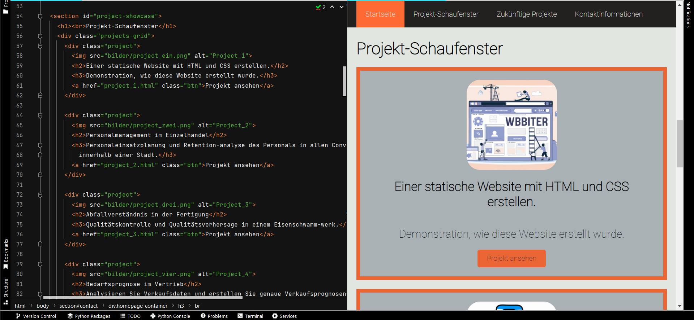

A demonstration of how this website was built, how HTML and CSS work together, how to add different elements
(like a navigation bar, images, videos, links, etc.), and how to run Python scripts directly within a web page.
The most effective way to interact with an application, promote a service, or showcase a programmer's work
via a well-designed portfolio website is through the internet. Before the rise of user-friendly website
builders like SquareSpace and other "no-code" platforms, most online content was created using programming
languages to construct the structure and layout of a website.
A static website, which doesn't require server-side scripting or database interactions, consists of simple
HTML, CSS and even JavaScript files served directly into the user's browser, which is why for this project
I would like to make a small demonstration of how to create a static website using HTML and CSS by
following these steps:
1. Plan the structure and content of the website.
2. Write HTML code to organize the content and include elements such as headings, paragraphs,
buttons and links, as well as visual elements like images and videos.
3. Apply CSS code to style the website by adjusting the layout, colors, font styles, and other
styling aspects that helps in highlighting certain aspects of the website.
4. Combine both HTML and CSS elements for each page of your website by correctly linking each
element throughout the website domain.
5. Upload the necessary files to a web server or hosting service to make your website publicly
accessible and available within the future.
HTML files are made up of tags that define the structure and content of a web page. Each of these tags
have a pre-established features and roles. Some of the most important tags are the following:
<html>: Is the root element of an HTML document. All other tags are contained within this tag.
<head>: This tag contains metadata relevant to the website that is not displayed in the
browser window such as the title of the page, search engine keywords, external files, among other types of
metadata inputs.
<body>: This tag contains the content of the HTML document that is displayed in the browser
window.
<header>: Typically contains the main menu or even the logo of a web page.
<main>: This tag contains the main content of the web page.
<section>: This tag represents a unique section of a web page that behaves uniquely from another.
It is usually determined by an id, which is complimented by CSS attributes and can hold different
types of elements like text, images, videos, and code within it.
To create a functional and visually appealing navigation bar, both HTML and CSS code is required to not
only add the location, structure and links to other html pages within the <nav> tag but also the
font, color scheme and unique CSS interactions like a hover feature. HTML determines how many sections to
include and whether to link to other pages or sections of a page.
The <nav> tag in the HTML file can be coupled with CSS code adds additional functionality
CSS can be embedded in HTML using a <style> tag or linked externally with the <link> tag within the
<head> section. CSS properties for <nav> might include text alignment, background color, and
display options.
Meanwhile, the CSS component for the <nav> tag can either be written directly in the HTML file using
the <style> tag, or you can link to an external CSS file using the <link> tag in the
<head> section of the HTML file.
In either case, the <nav> tag in CSS can be configured in a way so that it contains attributes such
as text alignment, background color, display settings, and many more.
nav a {
color: #E1E6E1;
text-decoration: none;
text-align: center;
padding: 20px;
}
nav a:hover {
background-color: #F24236;
color: #232020;
}

To add media like an image or a video, the <img> tag utilizes the 'src' attribute to define the file
path of the image and the 'alt' attribute that provides a description of what is being displayed.
Overall, the <img> tag can be enhanced by CSS components in order to make them more visually
appealing by changing the borders, shadows, filters, effects, or even make it responsive to the size of the
user's screen.
# HTML CODE <img src="bilder/project_ein1.png" alt="Project screenshot">
On the other hand the <video> tag has html attributes like 'controls' which specifies that
video controls should be displayed, 'playsinline' which specifies the video should play inside the element,
among other attributes like: 'width', 'height', 'loop' and 'muted'.
NOTE: The <video> tag supports the Global and Event Attributes in HTML, which can be used for audio
content as well instead of the <video> tag may provide a more appropriate user experience.
Within a portfolio website it is very important for a contact page to add links to other social media sites
like LinkedIn, GitHub, etc. In the case of a LinkedIn profile an 'href' and a 'target'
attribute are enough. 'href' defines the URL that the hyperlink points to, while 'target' specifies where
the linked URL should be displayed (_blank: means a new tab).
In order to add attributes to both the container in the contact page (logos) and the image itself (logo)
a CSS segment has to be added for both to enable not only the placement of the images but also how the
image behaves in its placement.
import numpy as np
from pyscript import display
import matplotlib.pyplot as plt
x1 = np.random.rand(80)
y1 = np.random.rand(80)
x2 = np.random.rand(80)
y2 = np.random.rand(80)
fig, ax = plt.subplots()
ax.scatter(x1, y1, color='green', label='First set')
ax.scatter(x2, y2, color='olive', label='Second set')
ax.set_title('MATPLOTLIB GRAPH using PyScript')
ax.set_xlabel('Great for data visualization')
ax.set_ylabel('Adaptable to most Machine Learning packages')
display(fig, target="plot-container")
PyScript is a Python framework that allows you to execute Python code from within a web page using
only an HTML file. PyScript is particularly useful for programmers who are not familiar with JavaScript,
serves as a viable alternative to what would usually be handled by the programming language of Javascript,
which enables the creation of much more complex web pages that interact with databases, generate graphs
or perform server-side tasks within dynamic websites.
PyScript is able to import common Python modules and run Python code seamlessly within an HTML file
just by linking - pyscript.net - and importing relevant library packages, enabling features otherwise only
available in Python.
NOTE: PyScript still has some limitations and cannot run all Python libraries. However, it still
supports extremely useful packages for visualization and data handling like NumPy, pandas, scikit-learn and
matplotlib.
# HTML CODE <py-config>
packages = ["numpy", "pandas", "matplotlib"]
<py-config>
# Python CODE <py-script>
import numpy as np
def test_button():
n_array = [1,2,3,4,5,6,7,8]
n_random = [np.random.choice(n_array) for _ in range(6)]
display(n_random, append=False, target="test_id")
<py-script>
import numpy as np
def test_button():
n_array = [1,2,3,4,5,6,7,8]
n_random = [np.random.choice(n_array) for _ in range(6)]
display(n_random, append=False, target="test_id")
Thanks to PyScript, it's easier to visualize data using Python tools to explain complex information
and illustrate patterns, trends, or outliers. PyScript overall is useful for enabling the display of
dynamic results from project-specific outputs.
As a short demonstration: the following Button generates a NumPy array with random numbers from 1 to 8
using the Python code that was previously displayed.
CONCLUSION: Building a statis website using HTML and CSS offers a creative way to showcase a
programming portfolio, allowing programmers like me to showcase the skills i've developed through my career
as a Promoter of intelligent solutions.
Since my skills relies on elaborate techniques in data handling, visualization and statistical analysis, I
found it necessary to display how these skills can be applied on a wide range of problems that can be found
in various industries. All for the purpose of highlight the impact that data-driven decisions can have on
business understanding, data analysis, and simulation/optimization modeling
Moreover, a coding portfolio serves as evidence of the working experience I've developed during my career
as a developer that has worked on implementing predictive models, applying statistical algorithms, and
utilizing machine learning techniques in order to provide valuable solutions.
Overall, static websites are lightweight, easy to maintain, and a fast-loading—ensuring platform,
where any type of developer could showcase their expertise as well as demonstrate their problem-solving and
technical abilities through a simple to manage interface.